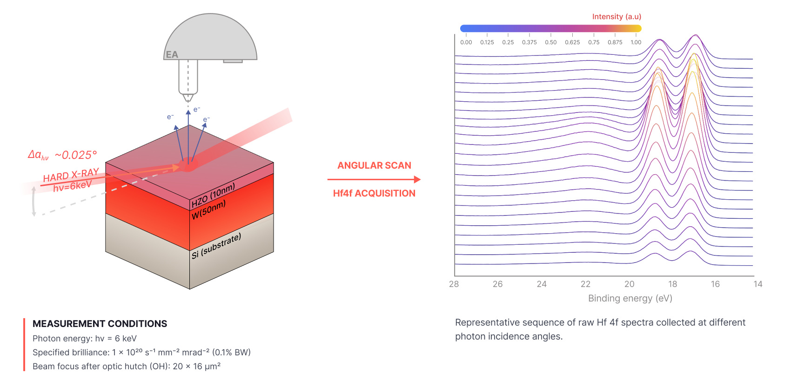
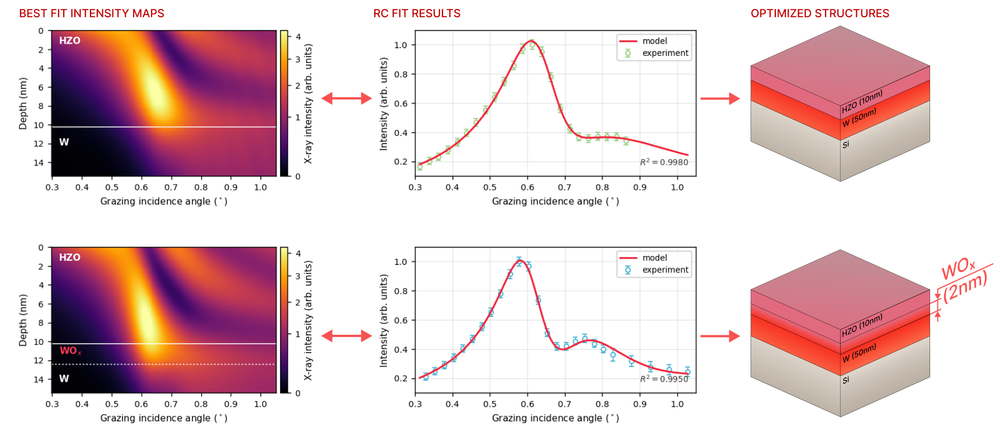
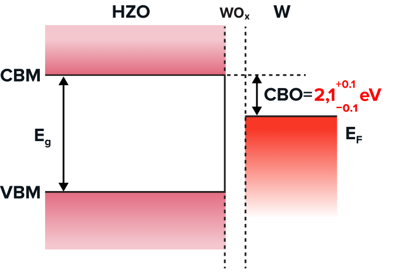
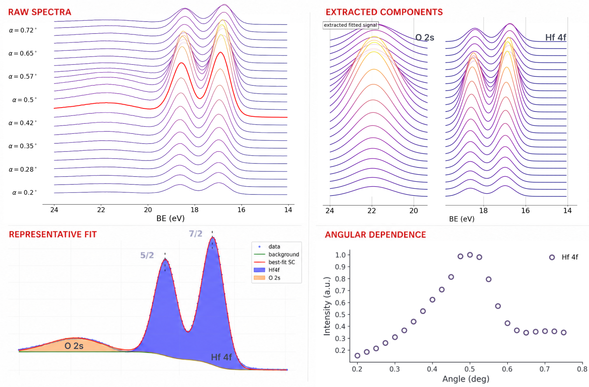
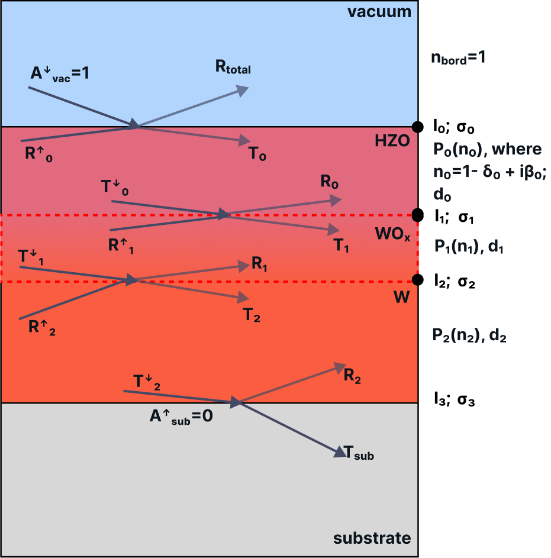
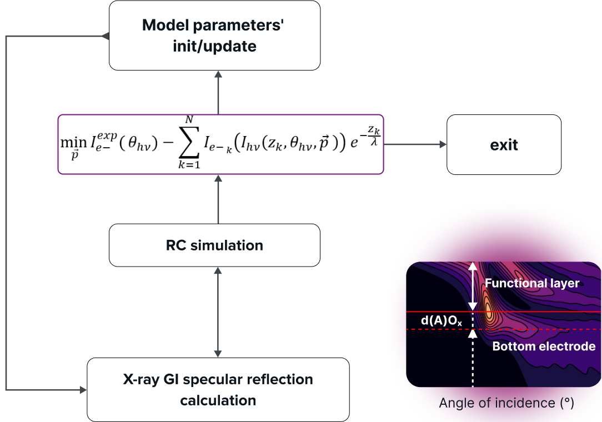
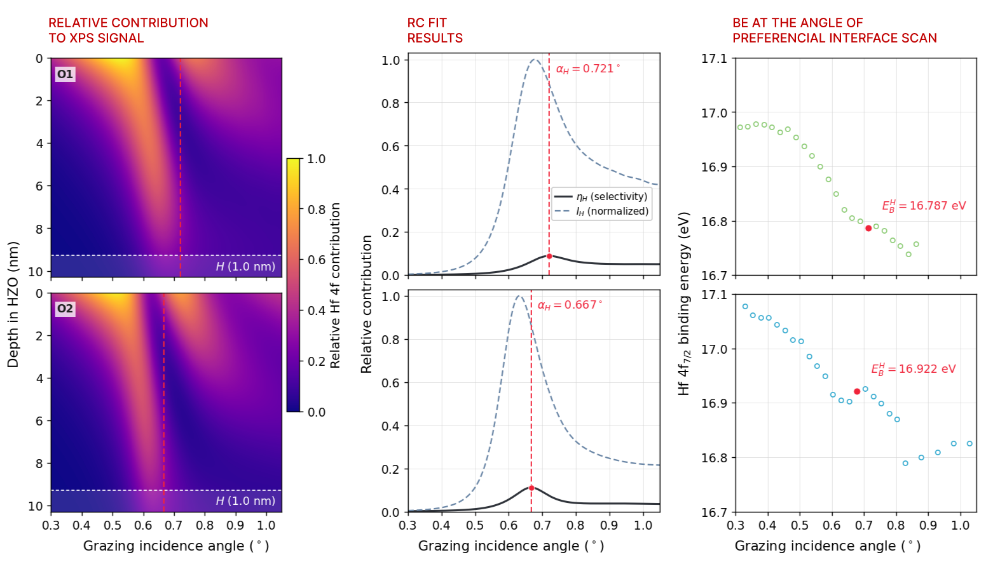
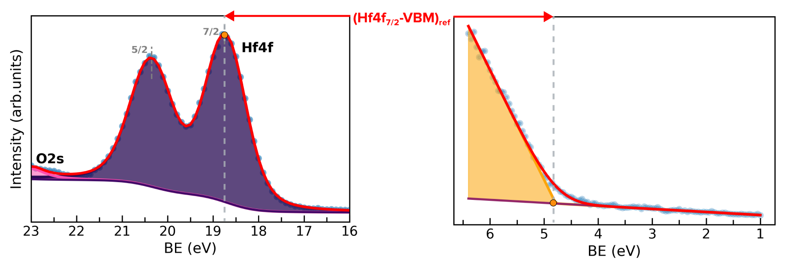

SW-HAXPES · Research project · 2021–2022
Probing buried HZO/W interfaces
Connecting angle-dependent photoemission to the structure and electronic properties of ferroelectric hafnium–zirconium oxide (HZO) on tungsten.
- Institution
- MIPT
- Sample system
- HZO / W on Si
- Research context
- MSc thesis, 2022
Research objective
Characterize the chemical and electronic structure of a buried oxide/metal interface using near-total-reflection standing-wave hard X-ray photoelectron spectroscopy (NTR SW-HAXPES). The analysis connects the angular dependence of the photoemission signal to the multilayer structure and interface band alignment.
My contribution
I developed an analysis methodology combining NTR SW-HAXPES with X-ray reflectivity modeling to refine the multilayer structure, examine buried interfaces, and determine Schottky barrier heights. The workflow brings together spectral fitting, optical modeling, and depth-selective analysis.
From angular scans to interface structure
At a photon energy of 6 keV, spectra are collected as the grazing incidence angle changes. Modeling the X-ray field and photoelectron attenuation connects these angular scans to the depth-dependent contribution of the HZO layer and its buried interface.


Select any figure to open the original at full size.
-
1. Extract the signal
Fit the Hf 4f and O 2s spectral components and extract their intensity as a function of incidence angle.
-
2. Refine the structure
Use a multilayer optical model to calculate the X-ray field and fit the measured angular intensity curves.
-
3. Resolve interface properties
Identify angles with enhanced interface sensitivity and use core-level and valence-band energies for band alignment.
What the analysis reveals
Interface structure
The fitted angular intensity curves and calculated X-ray fields distinguish the illustrated HZO/W and HZO/WOx/W structures. The latter includes an approximately 2 nm tungsten-oxide interlayer.


Electronic barrier
2.1 ± 0.1 eV
Electron barrier in the illustrated HZO/WOx/W band diagram
Core-level and valence-band measurements provide the energy reference for the band-alignment analysis. The resulting diagram places the HZO conduction-band minimum above the metal Fermi level by the barrier shown here.


Inside the analysis
Supporting figures show how the spectra, structural model, and energy references connect.
Spectral fitting and angular intensity extraction
Separating Hf 4f and O 2s contributions produces component-resolved angular intensity curves for comparison with the optical model.


Multilayer optical model and fitting loop
The model describes reflection and transmission at the layer boundaries. Calculated X-ray fields and photoelectron attenuation enter the simulated rocking curves; the structure parameters are then refined against the experiment.




Depth selectivity and band-alignment reference
The depth-weighted Hf 4f signal identifies incidence angles that increase the relative contribution of a 1 nm interfacial region. Core-level binding energies at these angles can then be related to the core-level–valence-band separation measured in a reference spectrum.



